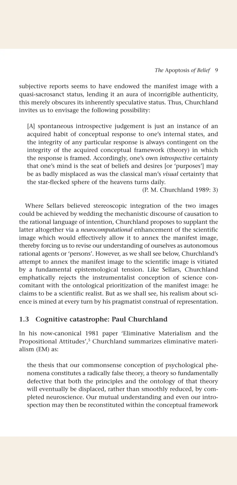
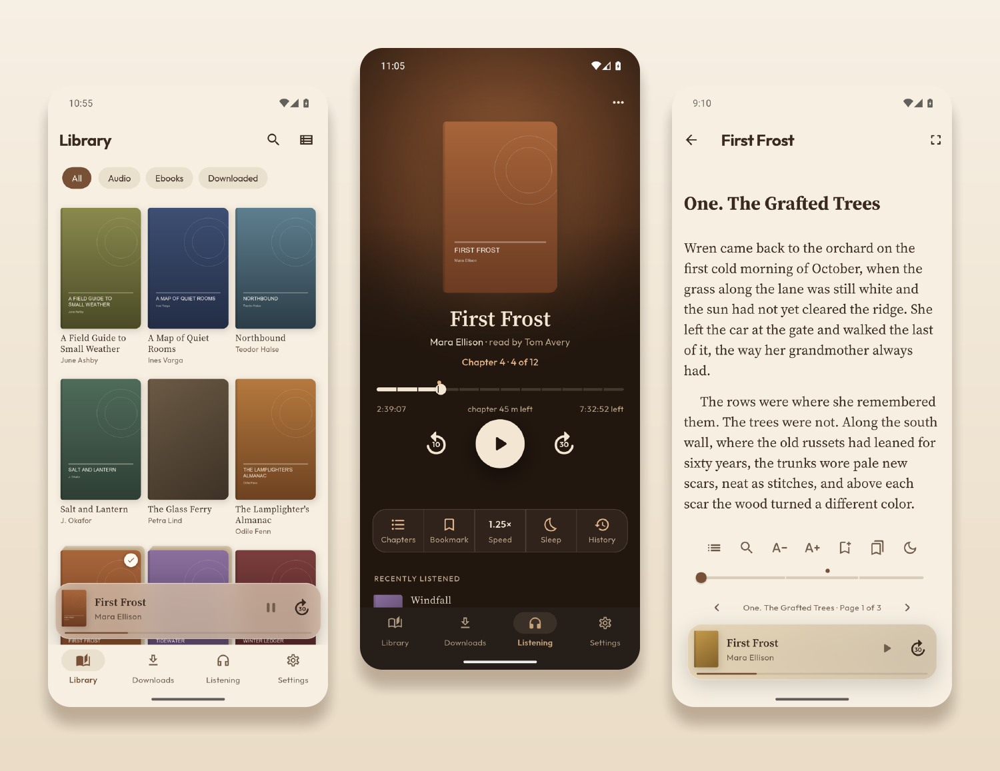
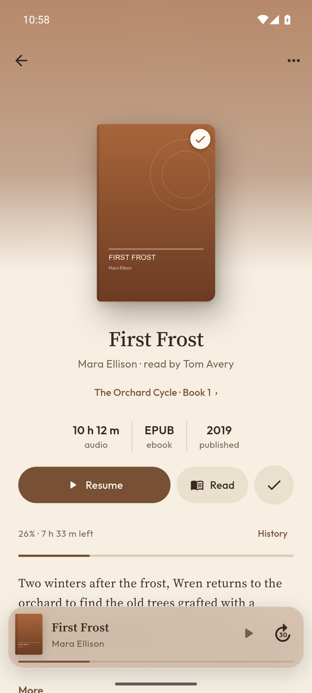
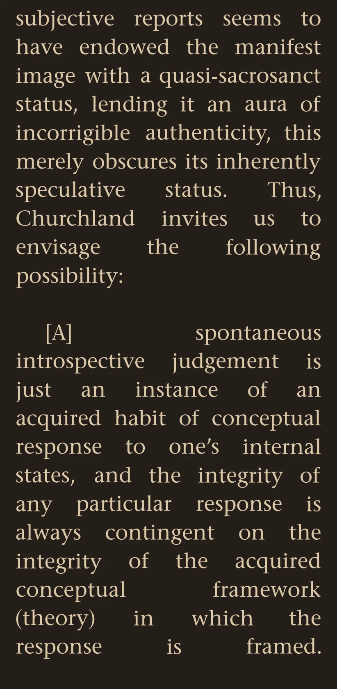
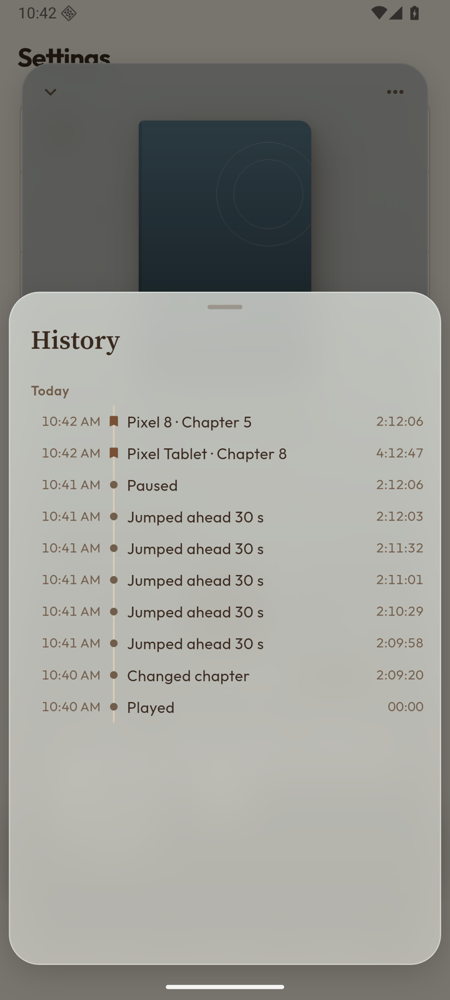

Your PDFs, made for your screen.
The original printed words, wrapped to fit your phone. Keep the figures, adjust the size, and read in Cream or Night.
Bookfin brings your Jellyfin audiobooks and ebooks together on Android, with a history of your places in both.
Written in Flutter · open source · Android today
The same page. Room to read.
A PDF need not mean tiny print and sideways scrolling. Page words keeps the book's own printed words and wraps them to your screen at a size you choose. Here is the same page of Nihil Unbound, before and after.


Ray Brassier, Nihil Unbound, printed page 9 (PDF page 24). Bookfin captures made on a computer, not Android screenshots. Reflow continues onto the next screen. Excerpt and capture notes.
- Keep the book's printed character. Page words uses images of the original words, including their letterforms and italics, rather than replacing the font.
- Choose a comfortable size. Words wrap into new lines to fit the screen, and each turn shows complete lines instead of cutting a line in half.
- Read in Cream or Night. The printed words take on your chosen paper and ink colors. See the same page larger in Night.
- Keep more than the words. Headings, paragraph breaks, and indents shape the flow; pictures, figures, and charts stay together as images.
- Use the text, too. Where the page's text is available, select and copy a passage or search for a word.
- Choose how to read. Return to Original for the source page, or choose Text for the reader's font. Trim blank page margins when you want more room.
- Read downloaded PDFs offline. English scans can have their text recognized on the phone, without a network connection.
Why I made Bookfin
Jellyfin is a lovely home for films and music. Books have been there for years, but they get far less attention, and the apps show it. The server reads an audiobook's chapters, but the official apps give you no chapter list. Jellyfin keeps only your latest position, with no record of your skips, jumps, and bookmarks. If you scrub too far by accident, or go back to hear a passage again, there is no quick way to return to where you were. An audiobook and its ebook sit in separate lists. A download that stops when the app closes waits for you to restart it, and removed downloads can leave files behind.
Books are a quiet corner of Jellyfin, and the server leaves a lot for an app to do. So I built the app that I wanted on top of it: one that treats your books like a shelf, makes a printed PDF comfortable on a small screen, and keeps listening and reading histories that you can return to.
I wrote Bookfin in Flutter. It draws every frame with its own engine, so the app looks and behaves the same wherever it runs, and the same code can grow to more platforms later. The codebase stays small, clean, and easy to read.

One. The shelf
Audiobooks and ebooks, on one shelf, in your pocket.
Most Jellyfin apps keep a book's audio and its text in different places. Bookfin puts them under one cover, shows only your book libraries, and keeps each series in reading order.
Download the audiobook, the ebook, or both, then listen and read with no connection at all. Lost signal, a dead battery, or a phone that dies mid-download? Bookfin picks up where it left off, fetches only what is missing, and never hands you a broken file. When you remove a book, its files really go.
- Series stack into one card and open in reading order.
- Filter by audiobooks, ebooks, or what is downloaded.


Two. The player
Made for long books and late nights.
A twenty-hour book needs more than a play button. Bookfin knows its chapters and shows you where you are in them. After sunset, it turns warm and dim, with a glow in the colors of the cover.
- Chapter marks and bookmarks on the position bar.
- Time left in the chapter and in the whole book.


Three. One shared History
Your listening and reading, with a way back.
Fell asleep? Skipped too far? Followed a reference in your ebook? Bookfin saves your place in each and brings the book's listening moves, reading moves, and bookmarks together in one History.
Open the same History from the player, the reader, or the book's details. You can explore either edition without losing the path you took.
- See listening and reading entries together, newest first, with headphone and book icons to tell them apart.
- Choose Go to on a reading entry while listening, and its ebook opens at that place. Choose an audio entry from the reader, and its audiobook opens there instead.
- Go back to where a move began, or Undo a jump.
- Returning to a saved place adds a move instead of erasing the past.
- Add and name bookmarks in either medium.
- Your history stays until you choose to delete it.

Real Bookfin screen with demonstration records, captured on a computer, not Android. Capture notes.
Four. The reader
The book's character. Your reading comfort.
EPUB · MOBI · PDF
Read EPUB and MOBI beside their audiobooks, with your place saved in each. For PDFs, choose how to read the page:
- Original keeps the source page as a page, with optional margin trimming.
- Page words wraps the original word images to your screen at an adjustable size, with figures and charts kept as images.
- Text uses recognized or extracted text in the reader's font. English scans are recognized on the phone, without a network.
Change between Cream and Night without changing the book. Select words to copy a passage, and use History to return to an earlier reading place.


The Night capture uses the same printed page as the comparison, with a larger size and different line breaks. Captured in Bookfin on a computer, not Android. Compare with Original and Cream.
Five. EPUB, drawn in Flutter
From the words to the controls, one reader.
Bookfin has its own built-in EPUB engine. Flutter lays out and draws the pages directly, without an embedded browser or a WebView fallback. Your book belongs to the same interface as your shelf and player.
The EPUB engine and reader controls share one Flutter implementation across platforms. Android is the main app today, and macOS has a working implementation. The iOS, Linux, and Windows apps are not ready yet.
- Adjust the text size and choose Cream or Night with Bookfin's familiar reading controls.
- Select and copy a passage, follow a link, or open a footnote without leaving the reader.
- Turn pages with a swipe, a keyboard, or a trackpad. The same reader adapts to how you read.
Three engines, one Android emulator
We tested Bookfin’s Flutter EPUB engine, epub.js in Android WebView, and KOReader’s crengine in small release test apps. All three read the same public-domain books, with the same font and page dimensions. No library, sign-in, or audio work was included.
Each cell shows median / p90, in milliseconds; lower means less time. The median is the middle result. The p90 is the time that 90% of the samples reached or beat. Each book has 12 fresh opens and 36 samples of every other action per engine.
Timing starts at the reading request and ends when Android copies a rendered page that matches a separately checked reference. This includes rendering, scheduling, content checks, and capture overhead. It measures test-app operations, not pure engine speed or physical display latency.
On a narrow screen, scroll each table sideways. With a keyboard, focus the table and use the arrow keys.
| Reading action | Bookfin | WebView + epub.js | KOReader engine |
|---|---|---|---|
| Fresh open | 503.9 / 554.1 | 550.4 / 562.0 | 252.0 / 321.5 |
| Cached reopen | 109.0 / 136.8 | 180.6 / 251.2 | 67.4 / 90.7 |
| Page turn | 58.9 / 68.6 | 66.0 / 114.8 | 61.4 / 74.4 |
| Warm chapter crossing | 58.4 / 75.5 | 89.8 / 98.7 | 67.2 / 78.7 |
| Text size 18 → 20 | 109.7 / 129.1 | 57.9 / 71.6 | 109.0 / 114.8 |
| Reading action | Bookfin | WebView + epub.js | KOReader engine |
|---|---|---|---|
| Fresh open | 621.4 / 651.0 | 549.7 / 564.3 | 326.3 / 370.3 |
| Cached reopen | 107.4 / 127.6 | 239.5 / 307.6 | 67.0 / 80.7 |
| Page turn | 58.8 / 66.6 | 62.2 / 73.6 | 67.4 / 78.3 |
| Warm chapter crossing | 59.0 / 66.3 | 91.3 / 110.6 | 66.6 / 74.9 |
| Text size 18 → 20 | 118.0 / 176.2 | 70.3 / 82.1 | 158.6 / 162.5 |
| Reading action | Bookfin | WebView + epub.js | KOReader engine |
|---|---|---|---|
| Fresh open | 700.3 / 825.5 | 682.9 / 749.9 | 183.2 / 216.0 |
| Cached reopen | 131.7 / 142.1 | 540.3 / 635.3 | 72.2 / 80.3 |
| Page turn | 58.0 / 76.8 | 70.4 / 83.1 | 66.1 / 77.1 |
| Warm chapter crossing | 58.1 / 61.1 | 79.7 / 97.4 | 60.0 / 76.3 |
| Text size 18 → 20 | 111.5 / 125.0 | 77.3 / 90.7 | 75.7 / 79.1 |
Measured November 10, 2026: Android 16 emulator, four virtual ARM64 CPUs, 2 GiB RAM, software graphics, and a 360 × 640 logical-pixel reading area. The 108 test runs produced 1,404 measured samples. These are emulator results, not Pixel timings.
Fresh opens start without the test app’s book caches; Android’s file cache remains. Cached reopens follow cache preparation. Chapter crossings enter an already visited chapter. KOReader lays out the whole book during open and size changes; Bookfin can finish pagination in the background, while WebView lays out chapters as needed. Page breaks and illustration sizes differ.
The test runner, Flutter’s texture rendering mode, capture overhead, and changing host load limit the comparison. These results do not establish one overall winner or equal rendering quality. Full results and raw evidence · How we measured · Implementation sources.
Six. Every device
Your place, on every device.
Jellyfin stores how far you got, and Bookfin reports that like any other app. But Jellyfin has no bookmark or history feature. A small server plugin, Bookfin Storage, fills that gap and carries them between your devices.
- If two devices disagree, Bookfin asks which place is real.
- Choosing keeps both places as bookmarks, so nothing is lost.
- Without the plugin, everything still works on one phone.
- Your records stay on your own server.


Seven. Getting it
Build it once, and your shelf comes with you.
Bookfin is a personal project with no store release yet. You build it from source on a computer, then install it on your phone. A Nix flake pins every tool, so the build needs nothing else installed.
You need:
- A computer with Nix: an Apple Silicon Mac, x86_64 Linux, or WSL2 on Windows
- A 64-bit Android phone and a USB cable
- A Jellyfin server with a book library
# on your Mac, Linux, or WSL2 computer, with the phone plugged in
git clone https://tangled.org/xenolandscapes.com/bookfin
cd bookfin
nix develop --command flutter pub get
nix develop --command bash tool/bookfin build-android
adb install build/app/outputs/flutter-apk/app-debug.apk
Then open Bookfin and sign in with your Jellyfin address, user name, and password. To sync bookmarks and history between devices, add the Bookfin Storage plugin to your server. The README has its steps.